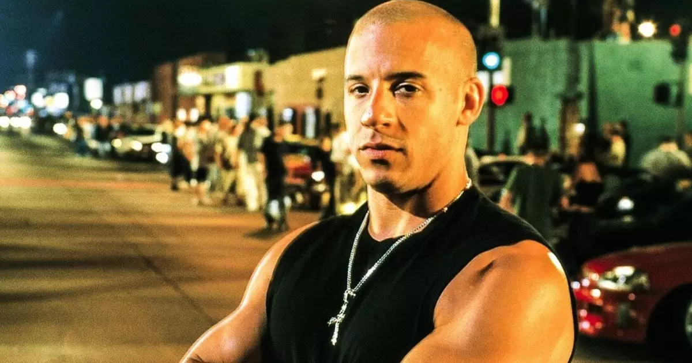
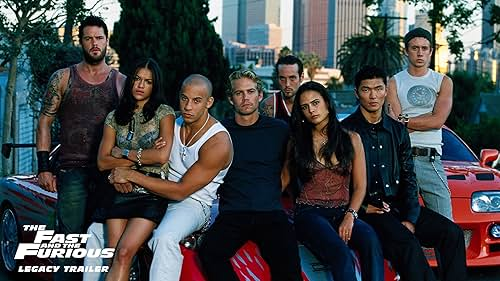
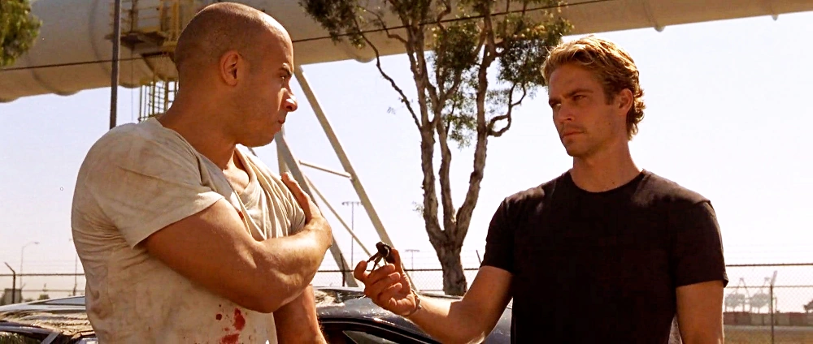
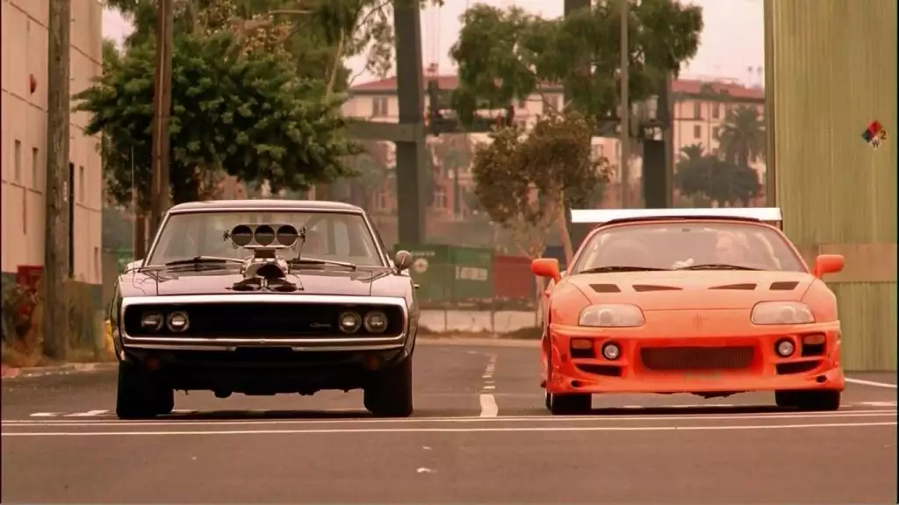
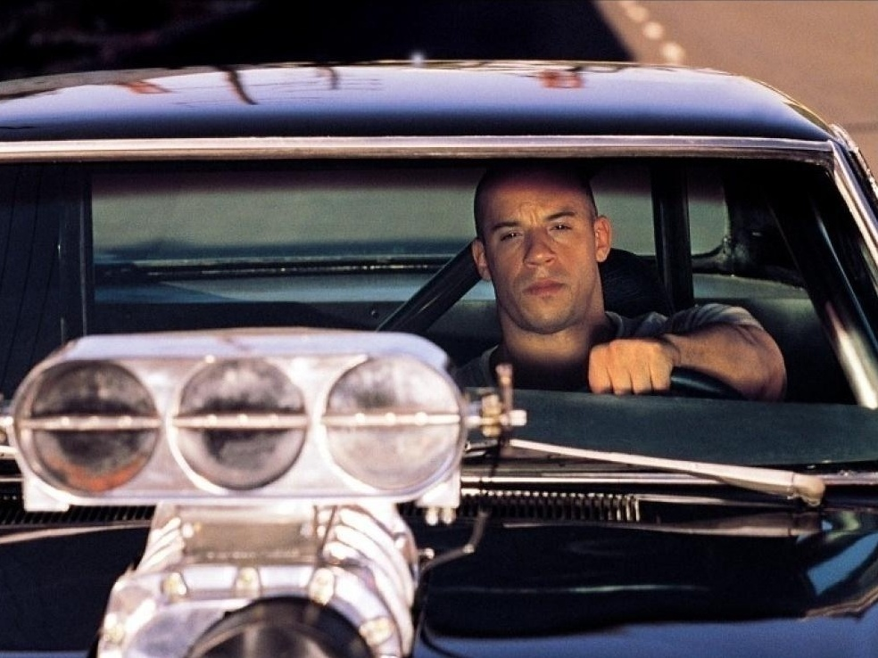

Velozes e Furiosos é uma franquia de mídia e Universo Compartilhado centrado em uma série de filmes de ação que estão amplamente preocupados com corridas de rua, assaltos, espiões e família. A franquia também inclui curtas-metragens, uma série de televisão, videogames e atrações de parques temáticos. É distribuído pela Universal Pictures.



O primeiro filme é baseado em um artigo, intitulado "Racer X", da revista americana Vibe escrito pelo jornalista Ken Li sobre corridas de rua na cidade de Nova Iorque, embora o filme é definido principalmente em Los Angeles.
O filme conta a história de Brian O'Conner (Paul Walker), um policial novato que se infiltra no mundo das corridas ilegais de carros modificados nas ruas de Los Angeles para capturar o responsável por diversos roubos a caminhões nas estradas próximas à cidade. Mas ele acabou se envolvendo de tal modo que acabou por não prender os corredores e logo apaixonando-se por Mia Toretto (Jordana Brewster), irmã de um deles, Dominic Toretto (Vin Diesel), que é o mais famoso e respeitado das ruas, e que namora a bela Letty (Michelle Rodriguez), que além de ser namorada de Dom, também é aliada nos crimes que ele comete.


